Pre-Processing¶
The aim of this tutorial is to describe step-by-step all the pre-processing operations that are necessary/suggested when working with ambient noise correlation. Pre-processing here means all the operations applied to the seismic data prior to the actual correlation. We will explain the operations and show how to perform those operations inside BlockCanvas (BC) with the functions provided by the MIIC library. The sequence in which we report them is not casual but reflects a common practice. Working on an example stream, we will create a project in BC to show the “partial” results that are obtained after each pre-prcessing step.
Loading the data¶
On one hand, we will not go deep in the explanation about how to load the data for further elaborations as this process strongly depends on the type of archive that stores the data. On the other hand we want to report the list of functions available in the MIIC library to load data:
stream_read: It handles multiple formats (GSE2, MSEED, SAC, SEISAN, WAV, Q, SH_ASC) and other proprietary formats (i.e. K-UTec)stream_seishub_read: This is a specific client for the SeisHub server (http://www.seishub.org)stream_arklink_read: This is a specific client for the ArcLink/WebDC server (e.g. http://docs.obspy.org/packages/obspy.arclink.html)dir_read_stream: This is a function that sequentially reads the content of a directory (i.e. file-by-file) using the funtionstream_readstated above and appends all the data to the same data structure Stream that is then passed to the successive blocks as input.
We will focuse on the first and simplest function
stream_read that will provide us the necessary
data to explain the successive pre-processing steps.
Its specific GUI when opened in BC is:
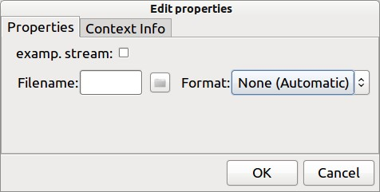stream_read function specific GUI
{kind=link}
Here you would usually enter the name of the data file or select it with the file browser. But there is also the option to load an example stream that
contains three traces, one for each components (i.e. Z, N, E).
From now on we will work on this example stream so that all the computations that we
will perform can be simply reproduced. It is convenient to show the “plain”
waveforms before going ahead. This is most easiely done by adding a stream_plot block to the canvas and conect the
stream_read output stream st to the input variable st of stream_plot to construct a project like:
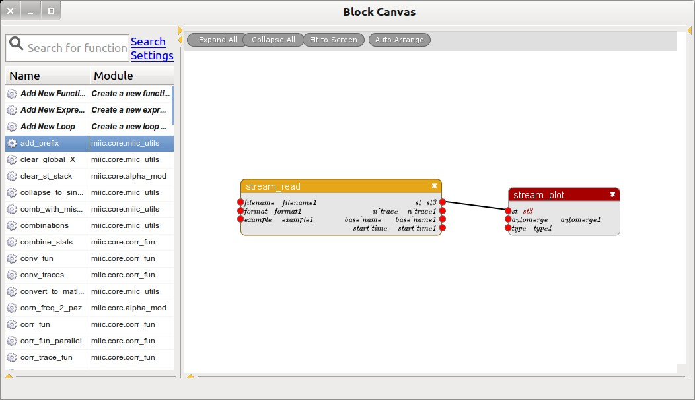BC project to display a stream
{kind=link}
Running the project shows the result:
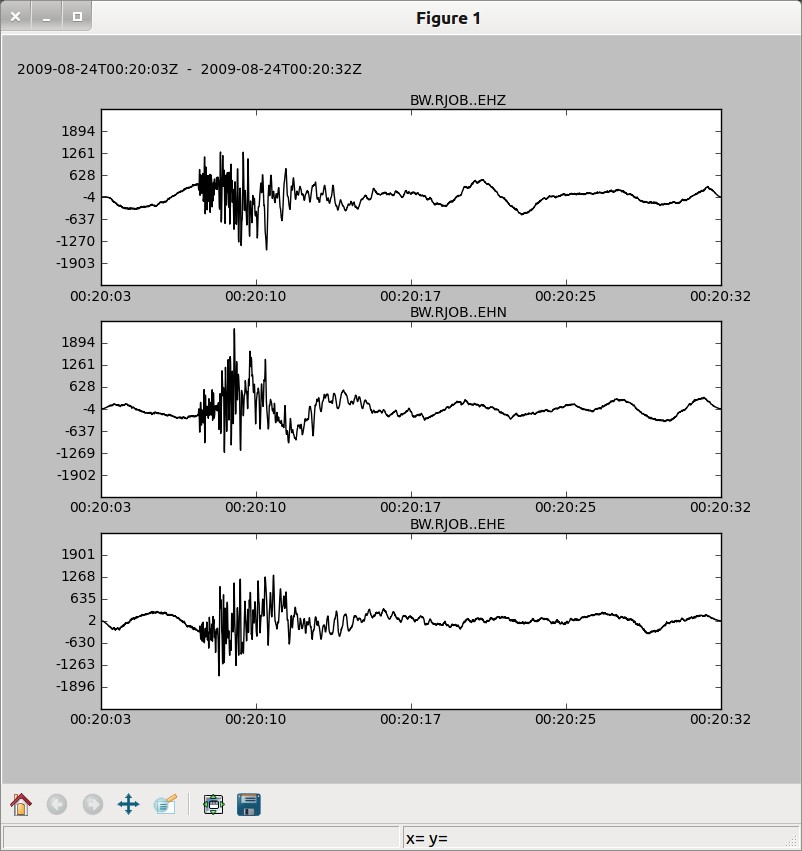Example stream
{kind=link}
Selecting the proper trace/s¶
It is not always possible to load just the interesting traces from a huge
dataset. Quite offen we are forced to read, e.g., a single file that contains
much more than what we need/want. For example, we could have the data for a
specific time window regarding all the stations in a specific network but we are
interested just in a reduced set of them or, for instance, here there are traces
for all the three component while we are interested only in the Z-component.
It is therefore necessasry to manipulate the stream so that we can obtain the
desired set of traces to pass to the next blocks.
This task can be done using the
stream_select function. The allows to specify properties (according to the obspy.core.stream.select method) that a trace in the stream has to fulfill to be passed to the output. This is how to
select, e.g., the Z component from the example stream:
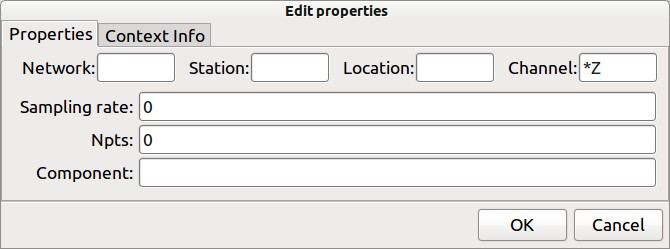stream_select function specific GUI
{kind=link}
And this is what is obtained.
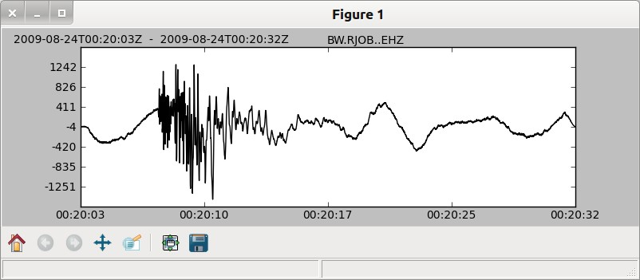Example stream Z component
{kind=link}
Has you can see, the function accepts wildcards so it is simple to realize a complex “filter” to get just the desired data. Sometimes is also a good idea to include a block like this just after the reading function to be sure that spurious data will not affect our computation.
Remove the mean¶
This step can be accompished with the
stream_remove_mean function. It is a trivial
operation that, in case of multiple traces contained in a single Stream, it
is performed trace-by-trace. No parameter is necessary for its computation
so the associated GUI is empty.
The example stream has already zero mean so this step will not affect it.
Downsampling the data¶
This is another pre-processing step that is often necessary when we have data
sampled at high frequency but we are interested in a much lower frequency band.
Downsampling can reduce the computational effort for the calculations significantly.
The function that the MIIC library exposes for that purpose is
stream_downsample.
Its specific GUI is shown below:
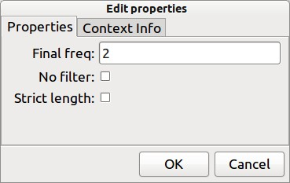stream_downsample specific GUI
{kind=link}
Leaving the details to the function help, what must be noticed is that it requires the final frequency instead of the downsampling factor so that traces with different original sample frequency can be handled at the same time. Going ahead with our example, suppose we want to reduce the frequency of the selected trace to 25 Hz. The project is now looks as follows together with the produced result:
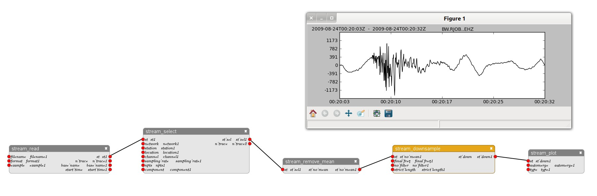Example project after downsampling the trace and produced result
{kind=link}
Filtering¶
It is rather common to not work with the broadband signal after downsampling but
apply some sort of filter. The goal is often to focus the attention on a
specific frequency range or just because it is convenient to remove part of the
spectra where a known process is active and, if left there, will mask the
intresting results.
The specific function that does the filtering is
stream_filter.
It provides four dirrent filter types:
- lowpass
- highpass
- bandpass
- bandstop
Its GUI contains different tabs: one general tab where it is possible to chose the filter type and read the stored parameters then one tab for each filter type where to pass the specific parameters. The “general” tab:
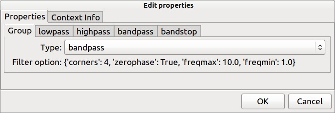stream_filter specific GUI: “general” tab
{kind=link}
The “bandpass” tab:
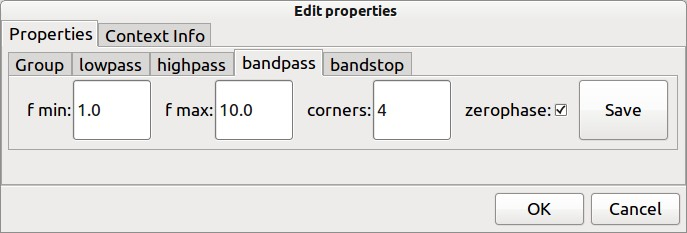stream_filter specific GUI: “bandpass” tab
{kind=link}
Remember to save the parameters usign the specific button before closing the GUI. Let’s see the filtering function in action in the example project. We fix the two cut-off frequencies for the bandpass filter at 2 Hz and 5 Hz. Below the project and the produced result.
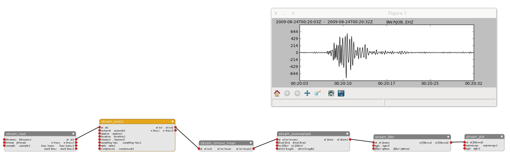Example project after filtering the trace and produced result
{kind=link}
Normalization¶
This is the most important step in the preprocessing that, depending on the type of application, admits different approaches. An early article that discusses the use of different normalization strategies is Benson et al., Geophys. J. Int., (2007). The aim of the normalization is to re-balance different portions of the signal in order to enhance the reconstruction of diffenrent parts of the Greens function during the correlation. One example it the different influence on the of a short high amplitude earthquake signal in comparison to a long weak ambient noise signal on the correlations with and without the 1-bit normalization.
As the amplitude of earthquake records may be order of magnitude above the ambient noise they will dominate the raw correlation function despite their short duration. In contrast if amplitudes are equalized or even removed the influence of the earthquake is limited by its duration.
Three functions are available in the MIIC library for that purpose:
- Time domain normalization (i.e.
stream_temp_norm) - Spectral whitening (i.e.
stream_spect_norm) - 1-bit normalization (i.e.
stream_1bit_norm)
Time domain normalization and 1-bit normalization are “general purpose” in the sense that there are no specific limitation on their use rather than the spectral withening that cannot be adopted when working with the autocorrelation (i.e. in this case the phase spectrum is constant). Just the time domain normalization which is a normalization by the running average of the signal envelope needs a parameter to be passed and thus has a non-empty GUI. This parameter is the width of the averaging window in samples:
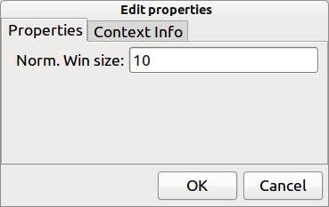stream_temp_norm specific GUI
{kind=link}
The example project with the 1-bit normalization function is:

Example project including the 1-bit normalization
Now we report the produced trace after the application of each one of the three proposed normalizatin function:
{kind=link}
{kind=link}
{kind=link}
It should be noticed that spectral whitening may cause boundary problems that can be removed by the application of a filter. Please also note how much the resulting waveforms differ in the three cases.
Ordering the traces¶
The calculation of the auto/cross correlation being done following the order
of the traces as they are stored in the Stream structure, to obtain
consistent results, it is a good practice to sort the traces with respect to their
seed-id. For that purpose, the MIIC library provides the
stream_sort funtion. It doesn’t need parameters
so its GUI is empty.
Summary¶
The steps discussed above can be used as they are to condition seismic signals prior to correlation. How to perform the correlation step is subject to another tutorial.